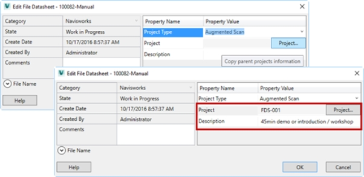

Home
|
Table of Contents
Help - Vault QuickStart 2019
PDM Virtual Team EMEA
Home
>
General
>
G.2 Extensions
Previous
Next
G.2 Extensions
G.2.1 Custom Command | GoTo Source/Replacement
G.2.2 File Tab | Jobs
G.2.3 ERP Tab
G.2.4 CAD-BOM Export
G.2.5 Create ThinClient Links
G.2.6 Document Structure Tab
G.2.7 Create Project / Subfolders & Properties
G.2.8 Project based file numbering
G.2.9 Inherit project metadata to files
The QuickStart 2017 environment can be enriched with several extensions. These extensions are/will come available on the Autodesk Knowledge Network (AKN):
(Documentation and installation instructions are provided with the download.)
Custom Command | GoTo Source/Replacement
File Tab | Jobs
ERP Tab
*
CAD-BOM – Filter & Reporting
*
Create ThinClient Links
*
Document Structure Tab
*
Create Project / Subfolders & Properties
*
Project based file numbering
*
Inherit project metadata to files
*
* = Soon available

Back to Overview
Top
Last updated:
3/27/2017